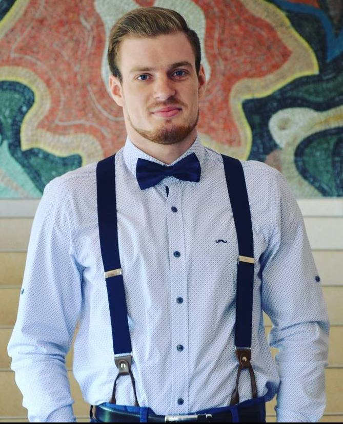

Резюме від 19.11.2023
Дмитро Авраменко

Експедитор
Загальна інформація та контактні дані
- Вік: 29 років
- Місто: Кременчук, Полтавська обл., Україна
- Освіта: Повна вища
- Спеціальність: Трансорт, логістика
- Телефон (моб.): +38 (067) 912-33-72
- E-mail: avram2705@gmail.com
Я, Авраменко Дмитро Сергійович, народився 25 липня 1994р. у місті Кременчук, Полтавської області. На протязі 2001-2012 рр. навчався
у Загально-освітній школі №1 міста Кременчука.
Одразу після школи, вступив до Кременчуцького національного університету ім. Михайла Остароградського на спеціальність
"Транспорт і логістика", де я і навчався наступні 6 років, і отримав диплом магістра.
Я веду досить активний спосіб життя, та з малечку займаюсь спортом, що з дитинства пробудило всередині мене такі якості як:
наполегливість, дисциплінарність, комунікабельність, стійкість до стресу, а також жагу до перемоги.
Також, я дуже полюбляю походи у гори. Саме гори допомагають зрозуміти цінність найпростіших речей, а також вони дали
фундамент, що стосується командної роботи. Тому я досить легко знаходжу спільну мову у будь-якому колективі і стаю командним
гравцем .
Професійні навички та знання:
- Українська мова (вільно);
- Польська мова (середній рівень);
- Англійська мова (середній рівень);
- 1С: Підприємство;
- Abona;
- Fleethand;
- Transporeon, Timocom, Trans.eu, Teleroute/123Carco/W-Transnet;
- прокладання оптимальних маршрутів для вантажівок;
- досвід водіння вантажівок "в коло" по усій Європі;
- досвід співпраці з великими компаніями-клієнтами (з такими як "Volkswagen Motor Polska", "BA-Glass GmbH", "Classen Floor GmbH");
- досвід співпраці з великими компаніями-перевізниками (з такими як "DHL", "DSV", "DB Schenker")
- досвід роботи зі складами тимчасового зберігання товару.
Досвід роботи:
-
Hegelmann Sp. z o.o. (2019-2022) - транспортно-спедиційна компанія, де я обіймав посаду "Експедитора".
До моїх обов'язків входили:
- пошук нових клієнтів;
- пошук нових субпідпрядників;
- контроль реалізації перевезень;
- внесення інформації до внутрішніх баз даних.
-
Express Heroes Sp. z o.o. (2022-2023) - транспортно-спедиційна компанія, де я обіймав посаду "Team-leader".
До моїх обов'язків входили:
- співпраця з новими клієнтами;
- співпраця з субпідрядниками;
- контроль виконання обов'язків моєї команди;
- щотижневе відзвітування.